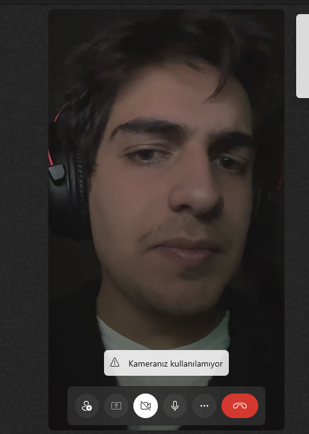
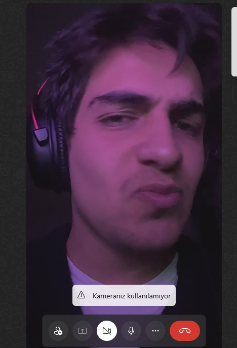

Tarayıcınız audio etiketini desteklemiyor.
Bekleniyor


Sonunda 🎉
Tarayıcınız audio etiketini desteklemiyor.
Asansör müziği
Sırada şarkı yok — ☰ ile ekle
▶
⏭
0:00
0:00
☰
Bekleme odası
Odadaki herkes aynı şarkıyı aynı anda dinliyor.
Odaya katıl 🎧